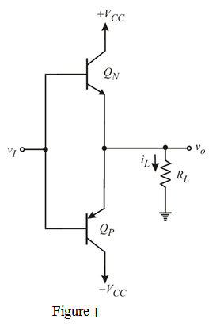

To attain the maximum power conversion, the corresponding value of output is

The maximum available load power is
Consider the circuit diagram of the class B output stage is shown in Figure 1.

The Output voltage amplitude is
And output is a square wave, i.e.
The power of square wave is,
The average load power is,
Therefore, the average load power is .
Each supply provides a current waveform of half-square wave, thus average power drawn from each supply is,
Where, the peak current drawn from each supply is
The supply power is
The supply power is .
Total power supply is,
The total power supply is .
The power conversion efficiency is,
The power conversion efficiency is .
To attain the maximum power conversion, the corresponding value of output is
The maximum available load power is
The power dissipation is difference between source and load power

To get the maximum value, derivative it with respect to output voltage and then equate to zero
The maximum output voltage is .
The power conversion efficiency is,
Therefore, the power conversion efficiency is  .
.